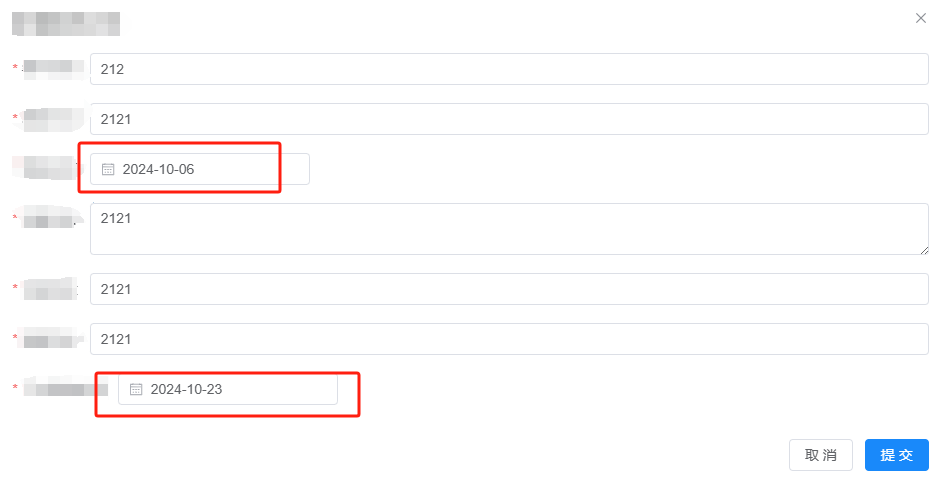
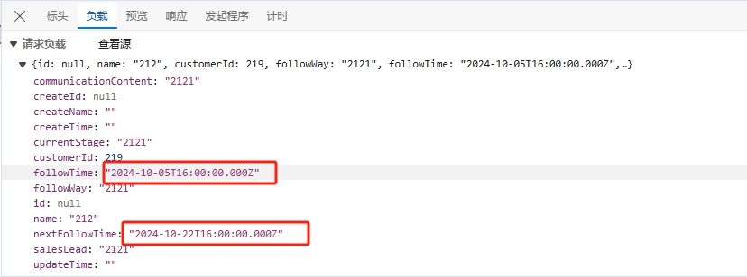
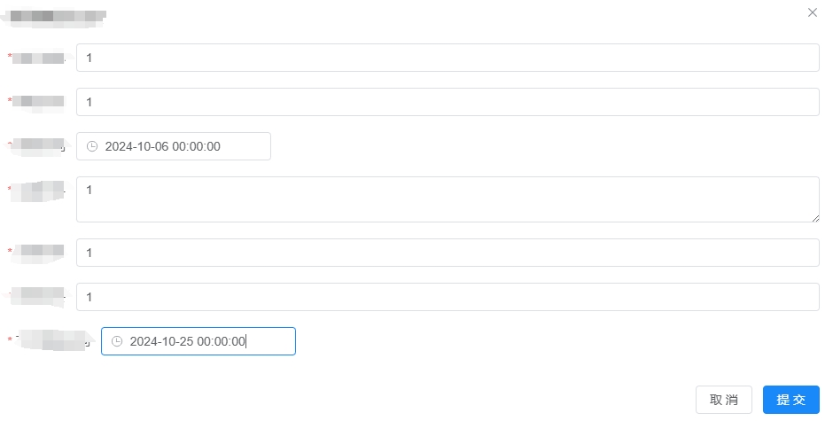
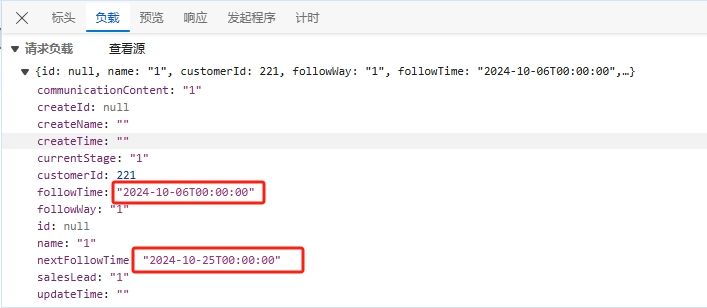

el-date-picker组件 UTC 时间格式问题
本文最后更新于 2024年10月25日 上午
时间和日期是一个常见且复杂的任务 尤其是当涉及到不同时区和格式时 需要使用 JavaScript 中的
dayjs库来处理时间差问题，特别是将 ISO 8601 时间字符串转换为所需格式
理解 UTC 和 ISO 8601 格式
UTC**（协调世界时）是当前全球通用的时间标准，它并不受地方时间（如东八区、东五区等）的影响。UTC 时间通常以 ISO 8601 格式表示：
1 | |
YYYY-MM-DD表示日期。T是日期和时间之间的分隔符。HH:mm:ss表示时间。.000是毫秒（可选）。Z表示该时间为 UTC 时间。
选择的时间
发送的请求中的时间
使用 dayjs 处理 UTC 时间
dayjs 是一个轻量级的 JavaScript 日期库，支持时间和日期的格式化、解析、比较和计算
安装 dayjs
如果你还没有安装 dayjs，可以使用 npm 或 yarn 进行安装：
1 | |
或
1 | |
修改 el-date-picker 组件
1 | |
这个 value-format=”YYYY-MM-DDTHH:mm:ss” 指定了一个特定的格式
最后效果：
选择的时间
发送的时间
el-date-picker组件 UTC 时间格式问题
https://kitenx.github.io/huyanqun.github.io/2024/10/25/el-date-picker组件-UTC-时间格式问题/